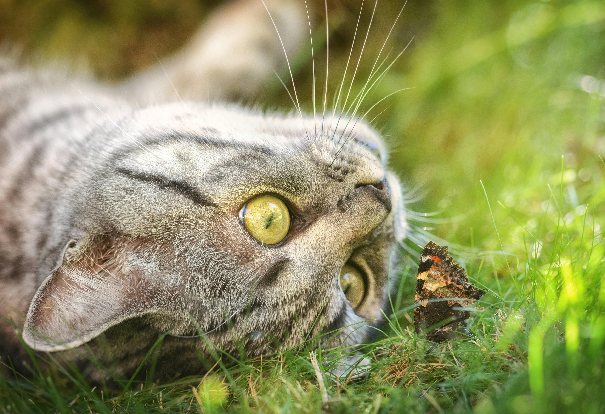
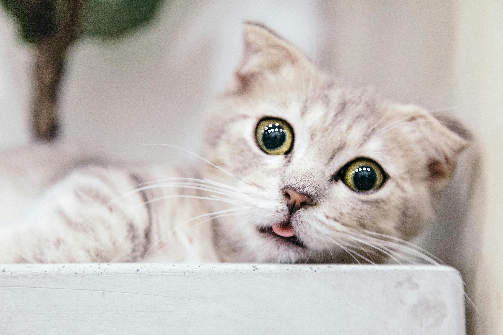

GATOS
Um gato consegue ouvir sons de alta frequência, cerca de 2 oitavas acima de qualquer humano. Um gato consegue correr a 49 km por hora, em curtas distâncias. Um gato salta 5 vezes a sua altura num único salto. Alguns gatos já sobreviveram a quedas de 20 metros, devido ao reflexo de endireitamento.
Os gatos têm um forte instinto territorial e têm a tendência de patrulhar e explorar seu território. Eles podem ser curiosos sobre qualquer alteração ou novidade em sua área, investigando cuidadosamente essas mudanças para garantir que tudo esteja em ordem.
Os gatos contribuem com muitos benefícios para as pessoas que vivem com eles. Existem estudos que afirmam que eles têm a capacidade de nos fazer relaxar e de reduzir o estresse. Se você abraça ou dorme com o seu animal de estimação, sua pressão arterial se reduzirá.
Ter um gatinho é estar ciente que ele não vai precisar de você a todo momento. Eles conseguem cuidar de si mesmo sozinhos e você pode passar mais tempo só aproveitando um bom descanso ao lado dele. Já quando o assunto é atividades diárias para o entretenimento do bichano, você não precisa de muito.
Nas imagens abaixo vocês iram encontrar alguns dos nossos gatos que estão para adoção Morgan(Macho), Muffin (Macho), Luna(Fêmea) e a Hera (Fêmea) se você se interessou? Entre em contato conosco temos mais felinos para você!

